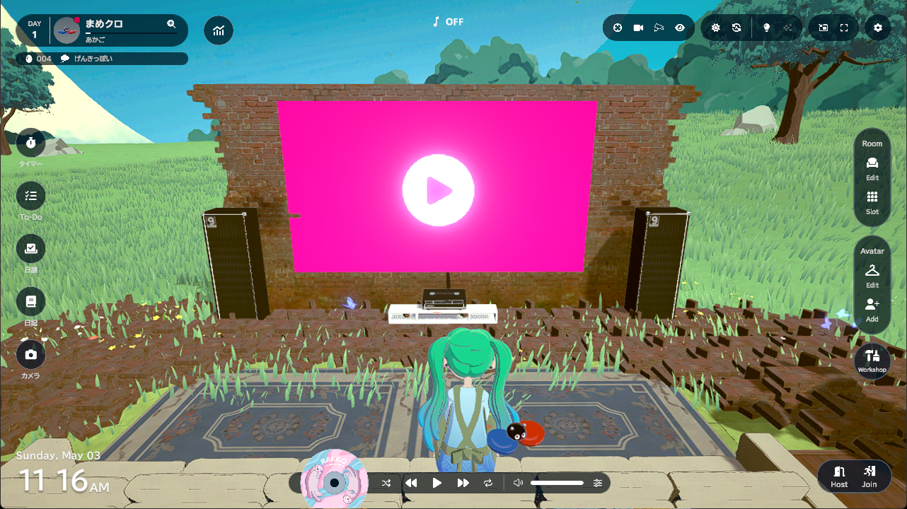
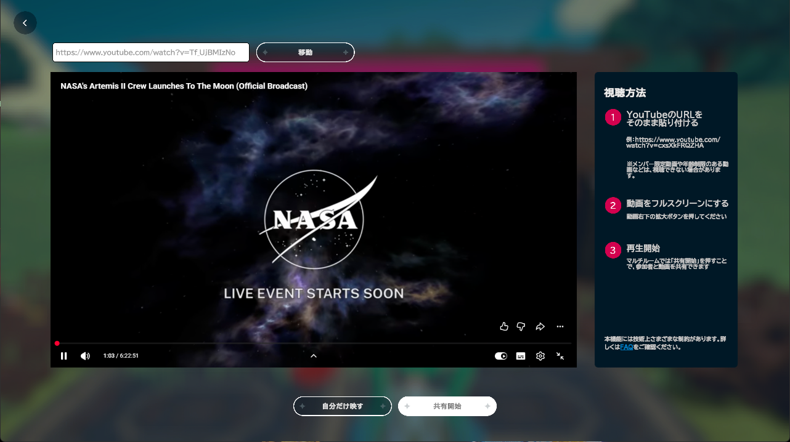
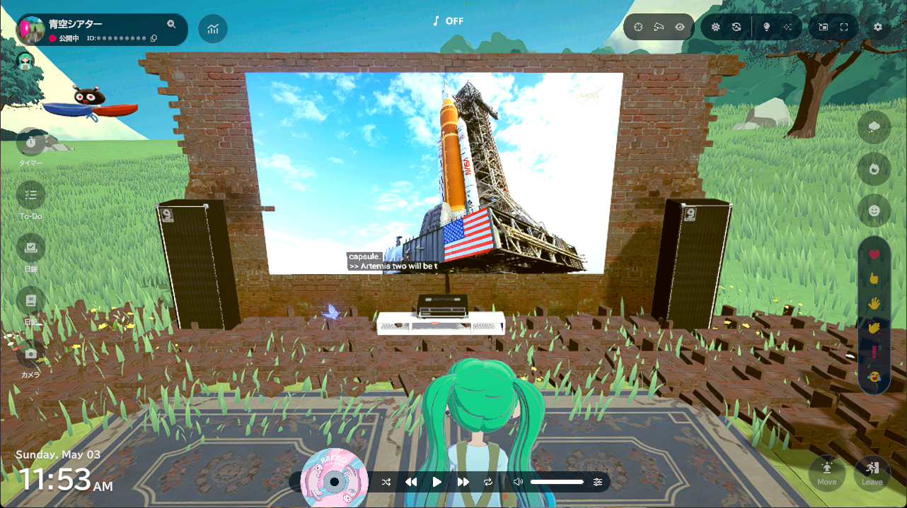
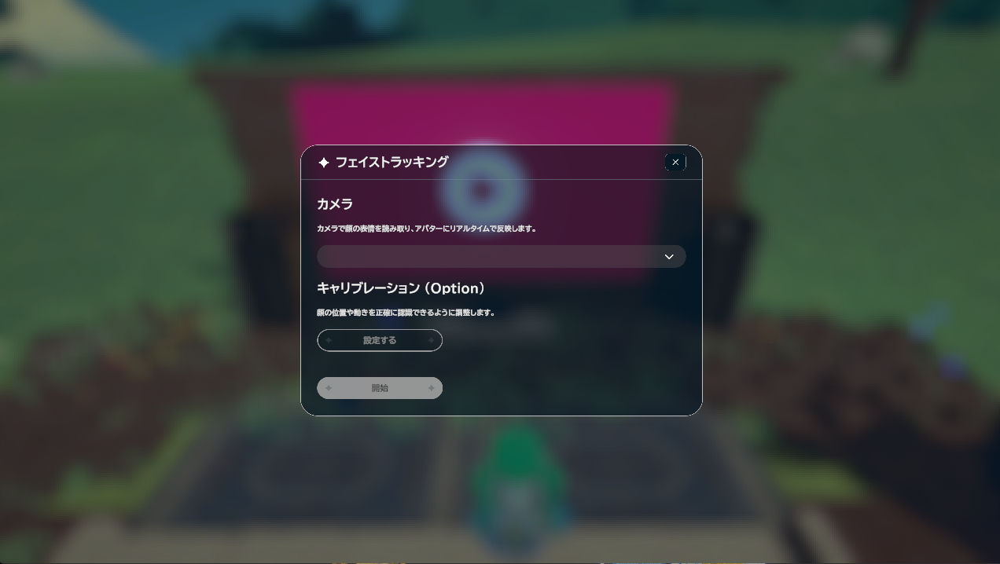
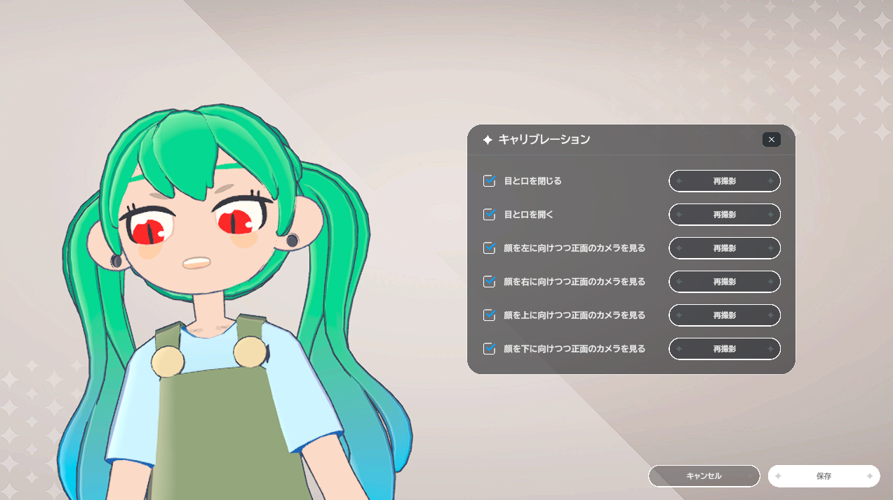
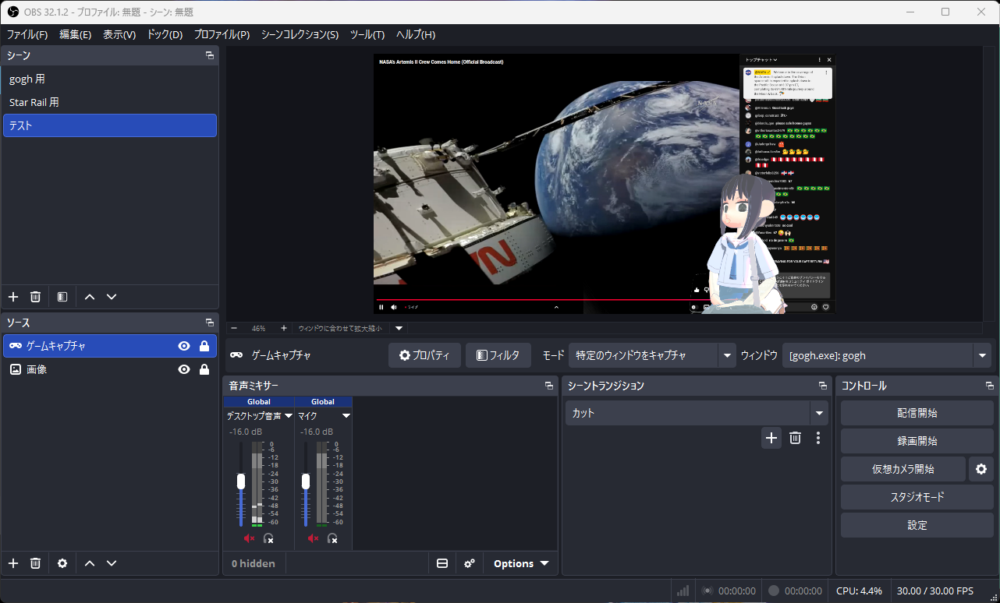

作業支援ゲーム Gogh v3 がリリースされた

日頃お世話になっている作業支援ゲーム Steam 版 gogh が発売1周年（おめでとうございます）を機に 3.0.0 をリリースした。
- gogh、Steam版の発売1周年で『ルーム投稿』『YouTube同時視聴』『コーデ保存』『フェイストラッキング』など大型アップデート！ | 株式会社 ambrのプレスリリース
- gogh: Focus with Your Avatar－Major Update 3.0.0: ルーム投稿、YouTube Watch Party など新機能多数！！－Steamニュース
主なアップデート内容は以下の通り：
- ルーム投稿
- YouTubeの同時視聴 “Watch Party”
- コーデ保存
- 髪型左右反転
- フェイストラッキング機能
- 表情変更機能
- 回転くん
- 新アイテム、新ポーズ
- 新種のクロダ42「せぱたクロ」が登場
- Steamフレンドをマルチルームに招待できるように！
- ルームスロットの拡大
この中で今回は Watch Party 機能とフェイストラッキング機能を紹介する。
Watch Party 機能
アイテムに「Watch Party スクリーン」が追加され，マルチルーム・モードで YouTube 視聴が出来るようになった。 サイズが S/M/L/XL とあり XL だとほぼ壁一面の大きさになる。
せっかくなので新しく YouTube 視聴用の部屋を作ってみた。

{kind=link}
部屋つうか野外だけど。 スクリーンは XL サイズ。 違法建築（合法）で床面を拡張している。 屋根もないようなところで YouTube 視聴とかファンタジーでいいよね。
Watch Party スクリーン設定画面（マルチルーム・モード）はこんな感じ。

{kind=link}
ちなみに映ってる動画は NASA の “NASA’s Artemis II Crew Launches To The Moon” である。 この状態で「共有開始」ボタンを押すと他プレイヤーも同じものを見ることが出来る。

{kind=link}
かなり無理やり映してる感じで，色々と制限がある。
- Ubuntu/Proton 環境下では YouTube 動画が動かなかった。これは想定内
- サインオフ状態での視聴なので，とにかく広告がウザい。つか，無料視聴だとこんなに広告が入るんだねぇ
- 動画の seek ができない（らしい）。基本的に流しっぱなし
制作側がアナウンスしている制限というか注意事項は以下の通り：
⚠️ 利用上のご注意
- 利用にはYouTube利用規約およびGoogleプライバシーポリシーが適用されます。
- WatchPartyは、各参加者の端末でYouTube動画を再生し、goghが再生位置を再生開始からの経過時間で合わせる独自機能です。YouTubeが提供・保証する機能ではありません。
- WatchPartyはマルチルームのホストのみが利用できます。他ユーザーと同期しないソロ視聴は全員が可能です。
- WatchParty中にホストが再生位置をシークした場合、同期はされません。
- 技術上の制約により、再生停止・音量操作などはgoghのUIから制御できません。YouTube画面を操作してください。
- 技術上の制約により、一部の動画は再生できません。ご了承ください。
- YouTube以外のURLは入力できません。
- 複数箇所に投影する場合も、同時に流せる動画は1つです。
ぶっちゃけ，機能上の制限より YouTube のポリシーによる制限のほうがキツそう。 YouTuber (VTuber 含む) の配信をマルチルームで流すのはまず無理だよね（自分で作成したコンテンツなら問題ないだろうけど）。 政府系の記者会見とか日食ライブとか公共性が高そうなものならなんとか行ける？ と思って NASA live の ”Live Video from the International Space Station” を流そうとしたら，何かの制限に引っかかるらしく，できなかった。 残念。
独りで見るのなら，既にある Stream 機能と OBS の仮想カメラを組み合わせたやり方のほうが融通がきく。
まぁ，せっかく部屋を作ったのでミラーリング可能な配信コンテンツがあればまた試してみよう。
フェイストラッキング機能
Web カメラ映像を取り込んで顔の動きを同期できる。

{kind=link}
face tracking
キャリブレーションはこんな感じ。

{kind=link}
face tracking
なんで身体が斜めってるのかは不明だが，別にカメラとの同期がおかしいわけではないらしい。
あれ？ これってグリーンバックとかの配信部屋を作って OBS と組み合わせれば gogh のアバターで VTuber ごっこができる？ やってみよう。

{kind=link}
OBS Studio
おー。できるぢゃん（笑） これはまたオモチャの要素が増えたねぇ。